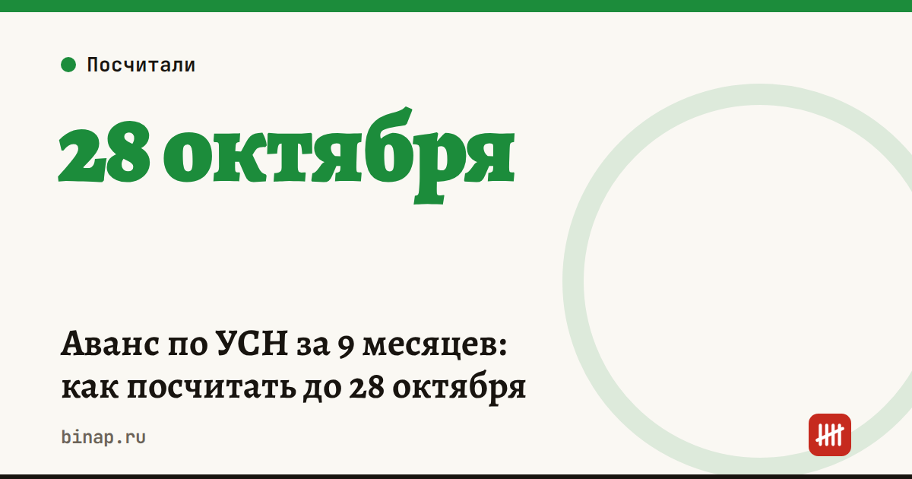

Аванс по УСН за 9 месяцев: как посчитать до 28 октября

Третий аванс по УСН — за январь–сентябрь — нужно было заплатить до 28 октября 2026 года. Его считают нарастающим итогом с начала года и вычитают то, что уже заплатили за I квартал и полугодие. Если вы не успели, заплатите как можно скорее: за каждый день просрочки начисляются пени, а штрафа за неуплату аванса нет.
Коротко
- Аванс за 9 месяцев = налог за январь–сентябрь минус взносы (на «доходах») минус авансы за I квартал и полугодие.
- Уведомление об исчисленной сумме — до 26 октября, оплата — до 28 октября 2026 года.
- Опоздали — пени: для ИП 1/300 ключевой ставки за каждый день просрочки; штрафа за сам аванс нет.
- Следующий платёж — налог за весь 2026 год: ИП — до 28 апреля 2027 года, компании — до 28 марта 2027 года.
Сроки, изменения и разборы для ИП и самозанятых — каждое утро в Telegram и MAX. Подпишитесь, чтобы не пропустить.
Формула для «доходов» 6%:
Аванс = доход за 9 месяцев × 6% − взносы за себя − авансы за I квартал и полугодие
- ИП без работников уменьшает налог на взносы за себя полностью. С 2023 года фиксированные взносы за текущий год можно учесть, даже если они ещё не уплачены: важно, чтобы их срок уплаты приходился на этот год.
- ИП и компании с работниками — не больше чем на 50% налога.
Пример. ИП без сотрудников, доход за 9 месяцев — 2 400 000 ₽.
| Шаг | Сумма |
|---|---|
| Налог 6% за 9 месяцев | 144 000 ₽ |
| Минус взносы за себя, которые вы учитываете | 40 000 ₽ |
| Минус авансы за I квартал и полугодие | 60 000 ₽ |
| К уплате до 28 октября | 44 000 ₽ |
Суммы взносов и прошлых авансов в примере условные — подставьте свои.
Для «доходов минус расходы» 15%: база — доходы минус расходы за 9 месяцев, ставка 15%, затем минус авансы за I квартал и полугодие. Взносы на этом объекте входят в расходы, а не уменьшают налог.
Что сделать:
- Посчитайте доход (и расходы) за январь–сентябрь по книге учёта.
- Проверьте ставку своего региона: она может быть ниже 6% или 15%.
- Подайте уведомление об исчисленной сумме до 26 октября: 25 октября — воскресенье, срок переносится на понедельник. Если аванс получился нулевым, уведомление не нужно. Декларацию по УСН за год подают отдельно.
- Пополните ЕНС до 28 октября.
Если не успели до 28 октября
Пени. Для ИП — 1/300 ключевой ставки за каждый день просрочки, начиная с 29 октября. Расчёт редакции: долг 44 000 ₽, ставка 14%, 20 дней → 44 000 × 0,14 ÷ 300 × 20 ≈ 411 ₽. Чем раньше пополните ЕНС, тем меньше пени. Для компаний правила расчёта пеней при долгой просрочке могут отличаться — сверьте их со статьёй 75 НК РФ.
Уведомление. Если не подали уведомление вовремя, подайте его сейчас: без него налоговая не распределит деньги с ЕНС на аванс. За опоздание с уведомлением возможен штраф 200 ₽ (ст. 126 НК РФ).
Что дальше
| Что | ИП | Компания |
|---|---|---|
| Декларация по УСН за 2026 год | до 25 апреля 2027 | до 25 марта 2027 |
| Налог за 2026 год | до 28 апреля 2027 | до 28 марта 2027 |
В годовом налоге вы вычтете все три аванса, поэтому ошибку в авансе за 9 месяцев можно исправить при расчёте налога за год. Какие ещё дела закрыть до конца года — в материале налоговый календарь ИП на 2027 год, а сколько всего платит ИП без сотрудников — в разборе сколько платит ИП на УСН 6% в 2026 году.
Сравнить «доходы» и «доходы минус расходы» на своих цифрах — в калькуляторе УСН.
Частые вопросы
Есть ли штраф за неуплату аванса по УСН? Нет, штраф бывает за неуплату налога по итогам года. За аванс начисляются только пени.
Нужно ли подавать уведомление, если аванс нулевой? Нет, уведомление подают только на сумму к уплате.
Можно ли уменьшить аванс на взносы, которые ещё не заплатил? ИП без работников может учесть фиксированные взносы за текущий год, если их срок уплаты приходится на этот год.